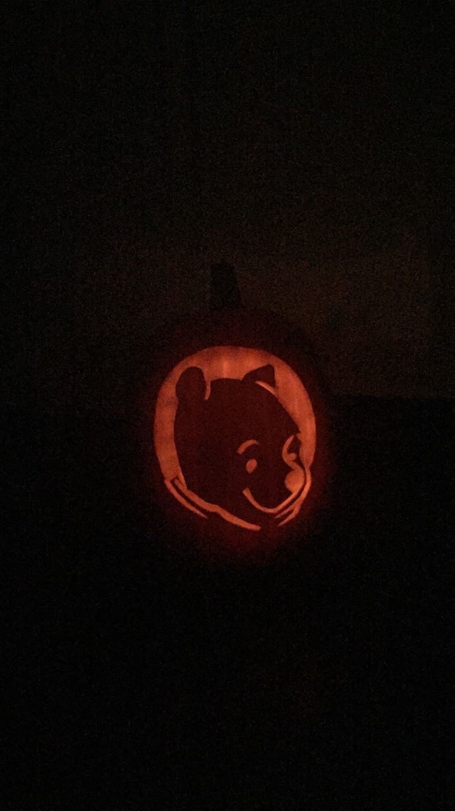

Hey!
Schön, dass du hier bist ♡
Ich bin Lena und zeige Dir hier ein paar Eindrücke von mir.
P.S. Fahre mit der Maus über die Bilder und schau was passiert.
Backen
Seit meine Cousine (3) und mein Cousin (6) auf der Welt sind, backe ich zu feierlichen Anlässen aufwendige Torten, weil ich es schön finde, wenn sich die Beiden freuen.
Do it yourself
Ich liebe es außerdem meiner Kreativität freien Lauf zu lassen, etwas zu schaffen - Bilder aus meinem Kopf real werden zu lassen.
Wenn ich mich kreativ austobe, höre ich nebenher sehr gerne Klaviermusik.
Webseiten, die mich inspirieren
PinterestSallys Welt
Fräulein Selbstgemacht
Turnen und Tanzen
Ich turne und tanze seit ich klein bin. Da der Spaß für mich schon immer im Mittelpunkt steht, lag mein Fokus nicht im Wettkampfturnen bzw. -tanzen. Aus gesundheitlichen Gründen bin ich leider nicht mehr so aktiv, wie ich gerne sein würde. Deshalb habe ich relativ früh angefangen mich als Trainerin ehrenamtlich zu engagieren.

Trainerin
Mit 14 Jahren habe ich angefangen mich als Trainerin zu engagieren. Bevor ich aufgrund des Studiums umgezogen bin, war ich Übungsleiterin im Tanzbereich. Zudem war ich Helferin in der Gruppenbetreuung im Bereich Kindergarten- und Mädchenturnen.
Ich hoffe, dass Dir die Eindrücke gefallen haben!
Hier gelangst Du wieder zum Anfang.